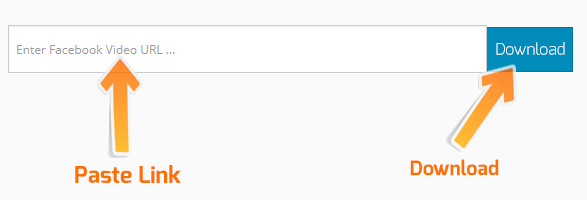

Alternative Way to Download Facebook Videos
Direct link copying via post timestamp or shared video link
Get Direct Link via Right-Click
Depending on how the video was shared on Facebook, follow the appropriate method below to grab the direct link:
Paste the Link into FBDock
Go to FBDock, paste your copied link into the input field, and click the "Download" button.

Save Video in High Quality
Select your preferred video format by clicking "Download in HD Quality" or "Download in Normal Quality" to immediately start the download.

Video Opens in Browser Instead of Downloading?
If the video plays inside your browser tab when you click download, simply right-click the video and choose "Save video as..." (or press Ctrl + S) to save it directly to your storage.
Need to Download Private Facebook Videos?
If the video is hosted inside a private group or account, you can easily save it using our Private Video Downloader Tool.